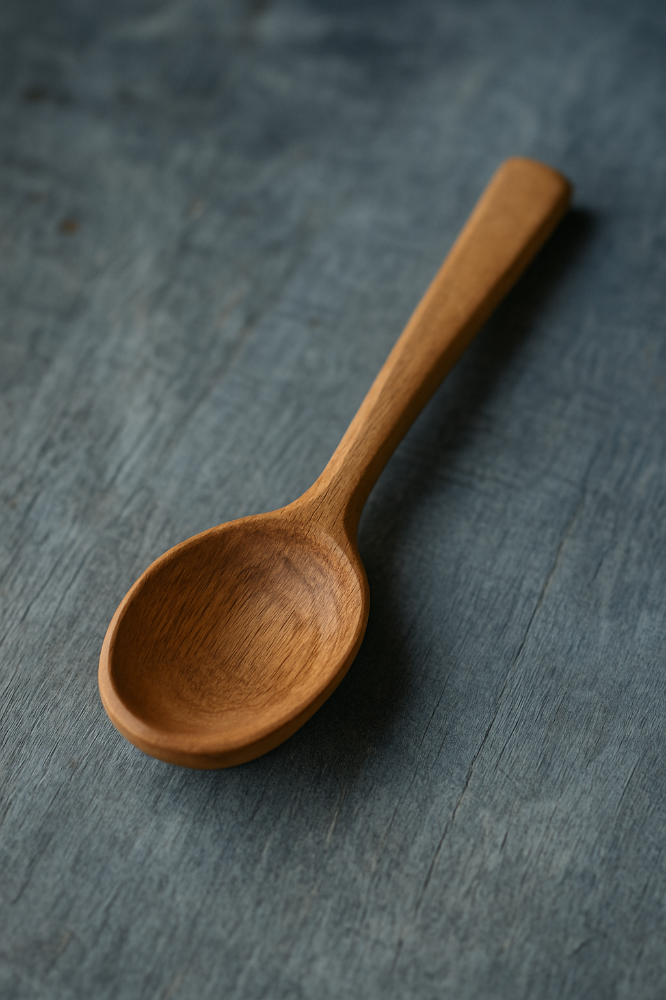
 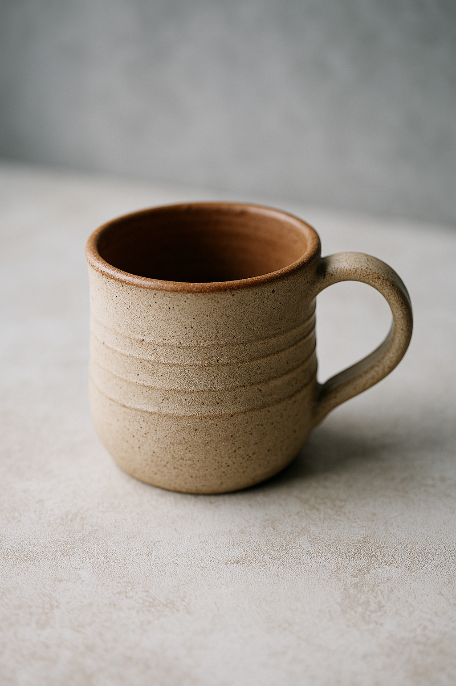
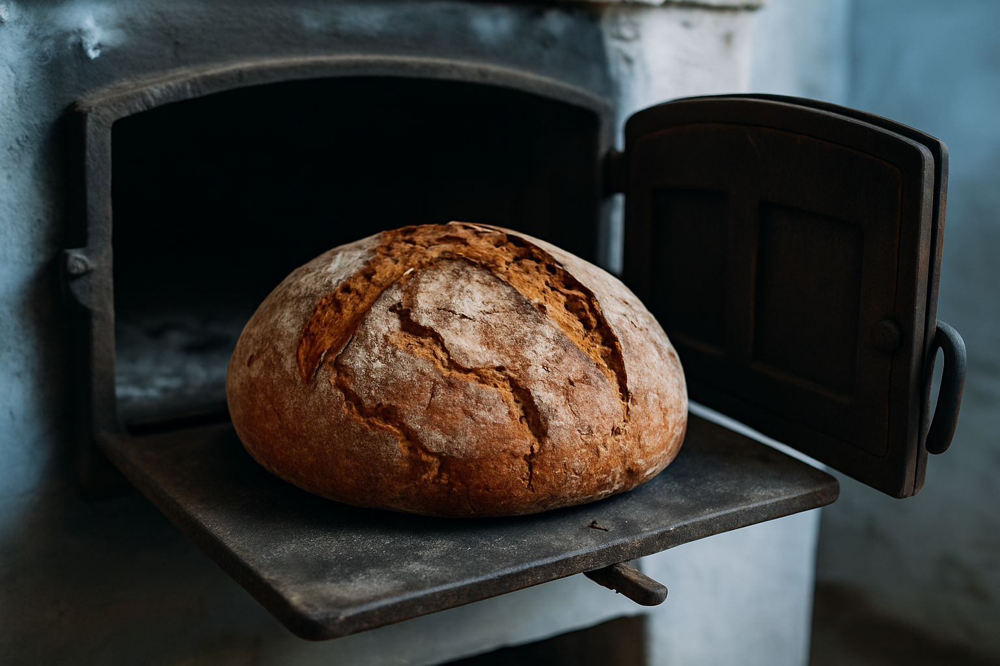
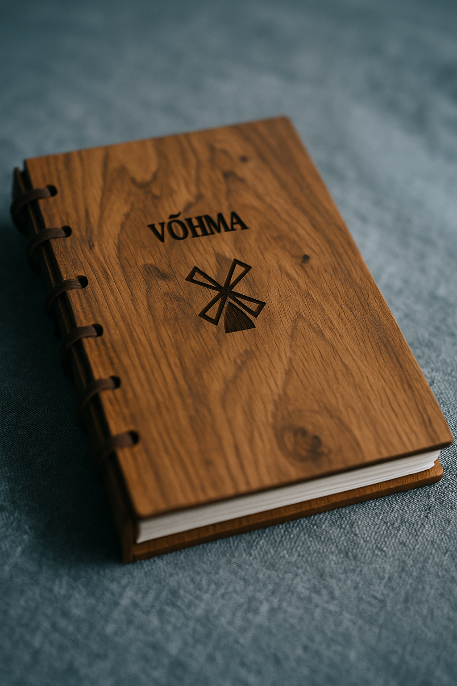
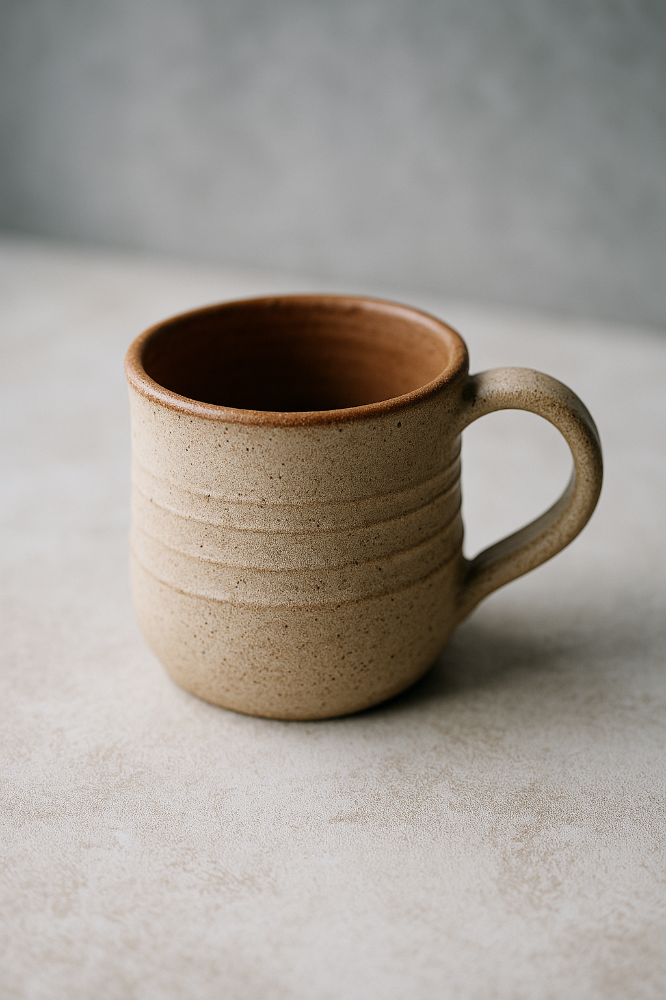
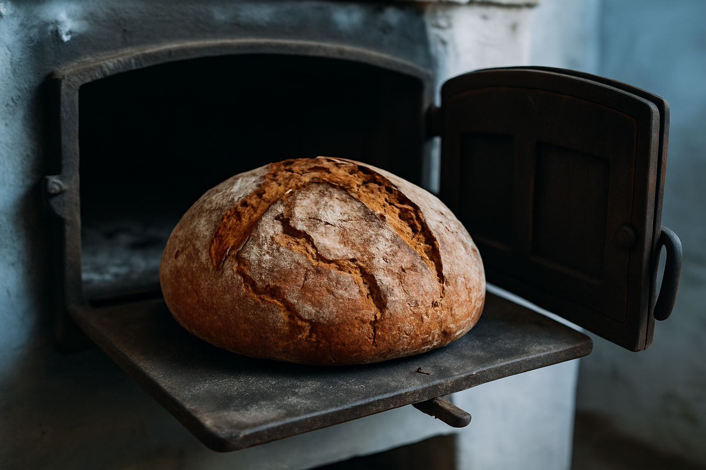
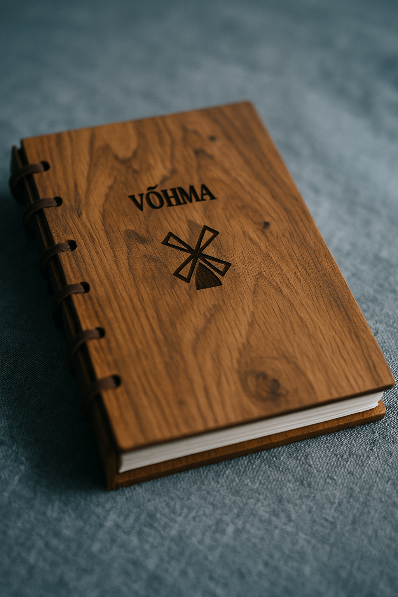
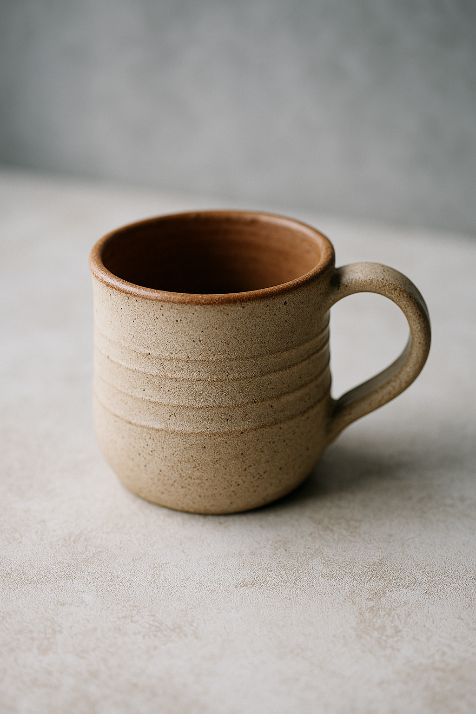
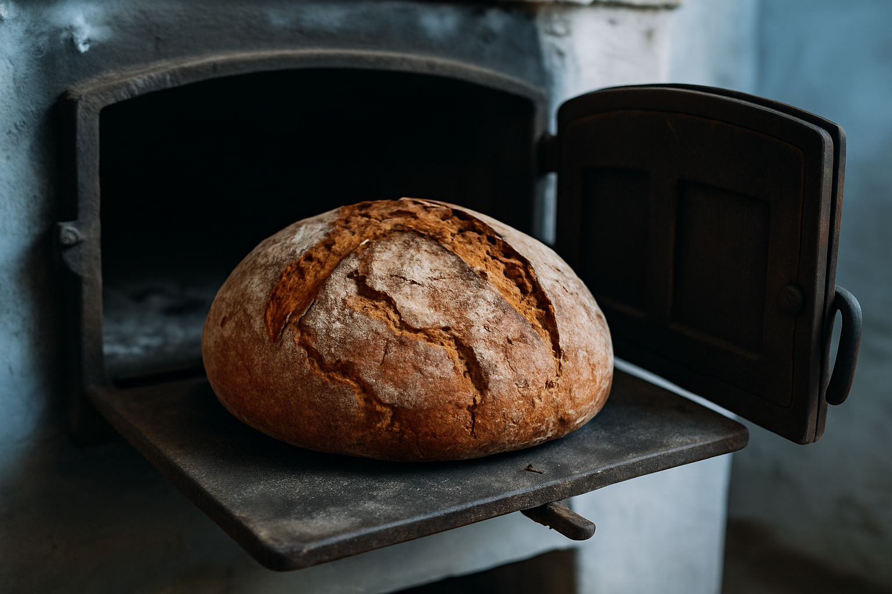
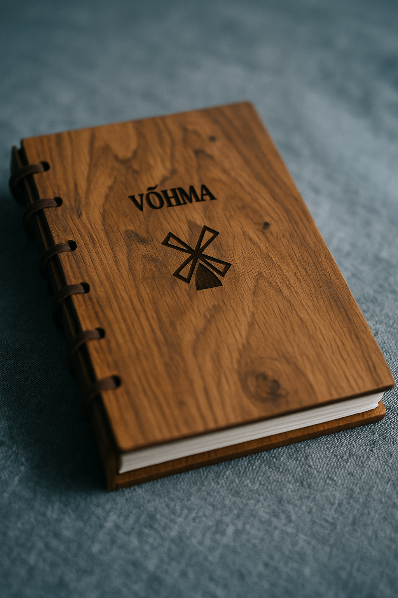
Avasta ajalooline pärl keset Eestimaa loodust — meeleolukad ekskursioonid,
kohalik käsitöö ja soojad vastuvõtud ootavad Sind.
Võhma tuulik on vaikse, ent väärika minevikuga paik, mis seisab Eestimaa tuulte käes juba üle sajandi. Rajatud 1884. aastal kohaliku talupoja Mats Ristla poolt,
kujunes tuulik kiiresti Võhma kandi oluliseks keskuseks, kus kohtusid töö,
kogukond ja looduse rütmid.
19. sajandi lõpul oli tuulik mitte ainult jahvatamise koht, vaid ka seltsielu süda. Kohalikud kogunesid siia uudiseid
vahetama, leiba küpsetama ning vahel isegi
tantsuks viiulit mängima. Tuuliku pööningul hoiti talvel jahu, aga ka
saladusi ja lugusid, mida põlvest põlve edasi anti.
20. sajandi keskpaigas, koos industrialiseerimise ja elektrimootorite levikuga, jäi tuulik aegamööda seisma. Kuid
kohalike initsiatiivil otsustati 1990ndatel
alustada restaureerimistöid. Tänaseks on Võhma tuulik taas ellu
ärganud — muuseumina, meene- ja leivapoodina ning kogukonna sümbolina, kus iga kivi ja tiib räägib
lugu ajast
ja inimestest.
Juhan on Võhma tuuliku hing. Tema hoolsa käe all püsisid tiivikud pöörlemas ka kõige tugevamas tormis. Lisaks jahu jahvatamisele oli Juhan tuntud oma puuküttega ahjus valminud rukkileiva poolest.
Marta oli tuntud oma villaste kinnaste ja linaste kottide poolest, mille mustrites leidus vihjeid Võhma tuuliku tiibadele. Ta viis läbi populaarseid töötubasid nii lastele kui ka täiskasvanutele.
Uku on Võhma tuuliku elav mäluraamat. Tema ekskursioonid on täis huumorit, rahvapärimusi ja ajaloolisi fakte. Uku usub, et iga kivi ja laud tuulikus räägib oma lugu.
Avasta meie ajalugu, käsitöö ja looduse võlu ehtsas tuule jõul töötavas tuulikus.
Ootame külla klasse, peresid ja sõpruskondi igas vanuses.
Ekskursioonid, töötoad ja kohalikud maitsed ootavad sind!
| Päev | Kellaaeg | Tegevus |
|---|---|---|
| Esmaspäev - 01.07 | 10:00 - 11:00 | Ekskursioon tuulikus Giidiga ringkäik, ajaloolised lood ja tuuliku töömehhanismide tutvustus. |
| Teisipäev - 08.07 | 13:00 - 15:00 | Leivaküpsetuste töötuba Tule küpseta rukkileiba vana puukütteahjus! |
| Kolmapäev - 16.07 | 15:00 - 17:30 | Käsitöö töötuba: linased kotid ja villased kindad Marta Mölder õpetab rahvusmustritega käsitööd. |
| Reede - 25.07 | 19:00 - 20:30 | Öhtu tuulikus: küünlavalgus ja legendid Uku Tuulemaa räägib vana lugusid ja rahvajutte |
| Pühapäev - 27.07 | 13:00 - 13:30 | Tuulikufilm: Vanade meistrite töö Väike filmiseanss vanast Võhma tuulikust ja selle taastamisest. |
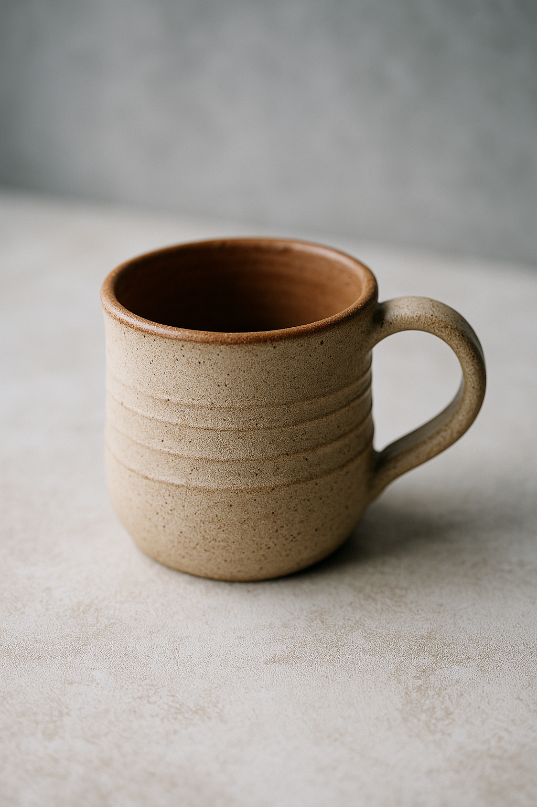
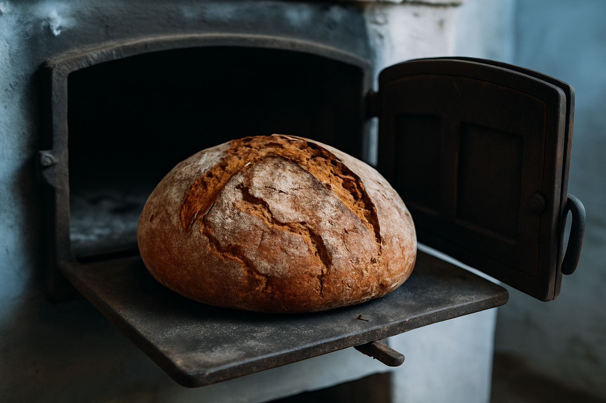
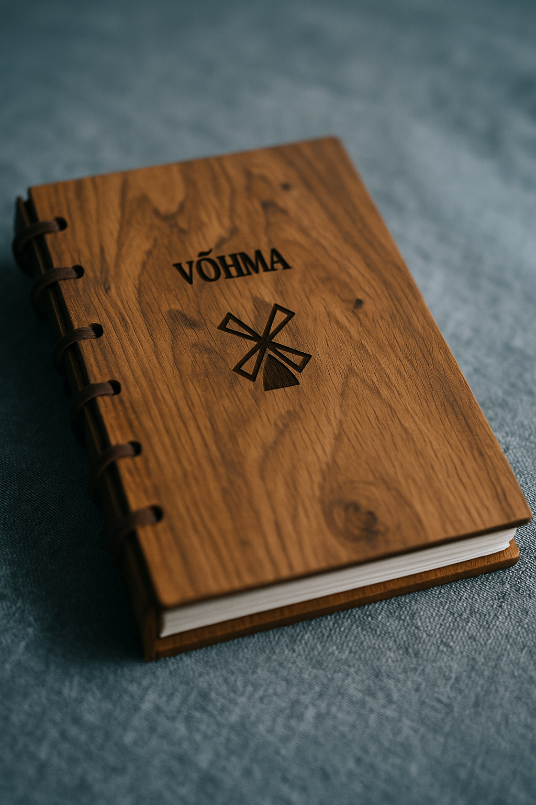